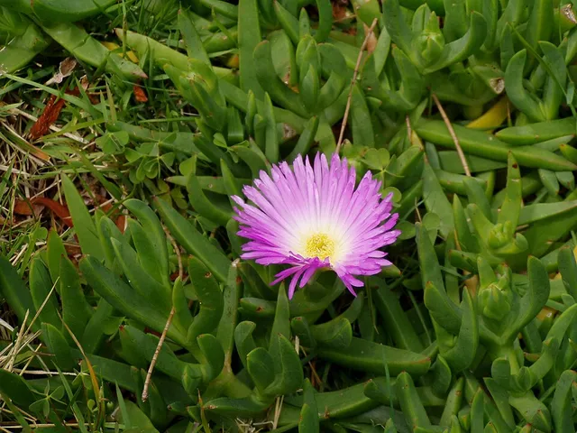

Pigface
Pigface is a wild fruit you can forage from December to March in Tropical north, Subtropical east coast, Temperate south-east, South-west and Tasmania. Succulent coastal groundcover with three-sided fleshy leaves, magenta daisy flowers and purple fruit tasting of salty kiwi.

When is pigface in season in Australia?
Pigface is usually in season December to March. Timing shifts with weather, latitude and altitude.
Where does pigface grow in Australia?
Pigface grows across Australia. Regions: Tropical north, Subtropical east coast, Temperate south-east, South-west, Tasmania.
How do you recognise pigface?
Succulent coastal groundcover with three-sided fleshy leaves, magenta daisy flowers and purple fruit tasting of salty kiwi.
How do you harvest pigface?
Pick only fully ripe fruit that comes away easily, into a shallow container so it doesn't crush. Leave plenty on the plant for birds and wildlife.
How do you eat pigface?
Squeeze the fruit pulp; leaves pickled.
How do you store pigface?
Best fresh; pickle leaves.
What is pigface good for?
Vitamin C.